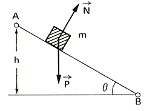
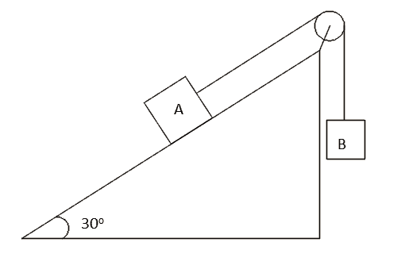
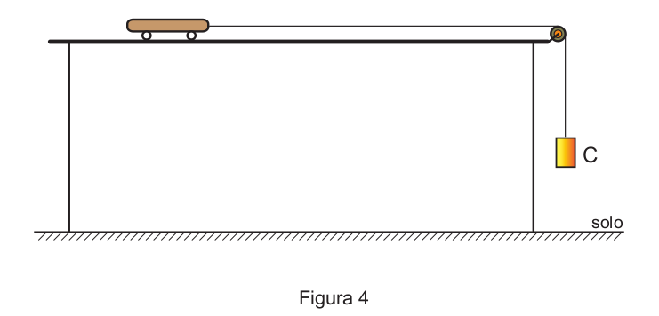
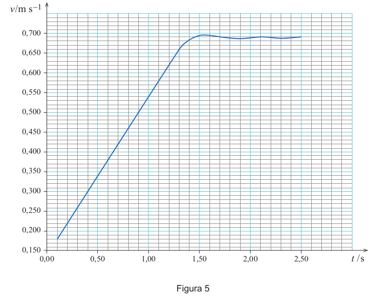

|
a) 20 m/s2. b) 5 m/s2. |
c) 3 m/s2. d) 12 m/s2. |
e) 2 m/s2. |
|
a) 15 N. b) 30 N. |
c) 15√ 3 N. d) 150 N. |
e) 15√ 2 N. |
Dados: g = 10 m/s².
|
a) 20 N. b) 45 N. |
c) 10√ 3 N. d) 15 N. |
e) 100√ 2 N. |
|
a) 45°. b) 20°. |
c) 30°. d) 60°. |
e) 22,5°. |

a) a aceleração com que o bloco desce o plano.
b) a intensidade da reação normal sobre o bloco.
c) o tempo gasto pelo bloco para atingir o ponto B.
d) a velocidade com que o bloco atinge o ponto B.

Sendo a massa dos blocos A e B iguais a 30 kg e 10 kg, respectivamente, qual a aceleração do conjunto?
Dados: g = 10 m/s2, sen30º = 1/2 e cos30º = √ 3/2
|
a) 0,50 m/s2. b) 0,75 m/s2. |
c) 1,00 m/s2. d) 1,25 m/s2. |
e) 1,59 m/s2. |

08.1. Durante o movimento do carrinho ao longo da calha, a força gravítica que nele atua é equilibrada pela
(A) força normal exercida pela calha no carrinho, constituindo estas forças um par ação-reação.
(B) força que o carrinho exerce na calha, constituindo estas forças um par ação-reação.
(C) força normal exercida pela calha no carrinho, não constituindo estas forças um par ação-reação.
(D) força que o carrinho exerce na calha, não constituindo estas forças um par ação-reação.
08.2. A Figura 5 representa o gráfico do módulo da velocidade, v , do carrinho em função do tempo, t , obtido na atividade laboratorial com um sistema de aquisição de dados adequado.

08.2.1. Desenhe, na sua folha de respostas, o corpo C e dois vetores que possam representar as forças que nele atuaram enquanto caía na vertical, antes de embater no solo.
Identifique aquelas forças e tenha em atenção o tamanho relativo dos vetores que as representam.
08.2.2. Determine a intensidade da resultante das forças que atuaram no carrinho, de massa 200,07 g, enquanto o fio esteve sob tensão.
Apresente todas as etapas de resolução.
08.2.3. Explique porque é que os resultados experimentais permitem concluir que a resultante das forças de atrito que atuaram no carrinho foi desprezável.
Tenha em consideração os resultados experimentais obtidos a partir do instante em que o corpo C embateu no solo.

a) manterá sua velocidade constante, pois o impulso resultante sobre ela será nulo.
b) manterá sua velocidade constante, pois o impulso da descida continuará a empurrá-la.
c) diminuirá gradativamente a sua velocidade, pois não haverá mais impulso para empurrá-la.
d) diminuirá gradativamente a sua velocidade, pois o impulso resultante será contrário ao seu movimento.
e) aumentará gradativamente a sua velocidade, pois não haverá nenhum impulso contrário ao seu movimento.